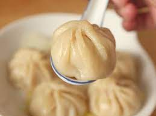

Dumplings

Description
This dish was originated in Asia. It is served in many ways, such as soups or pandfried.
Ingredients
- 1 1/4 lb. ground pork shoulder
- 3 scallions, finely chopped
- 1 garlic
- Tbsp. soy sauce
- 1 tsp. kosher salt
- 1 tsp. Shaoxing wine
- 1 tsp. sugar
- 1 3/4 tsp toasted sesame oil
- 3/4 tsp finely grated ginger
- 1 tsp ground white pepper
- Dumpling wrapping paper
Equipment
- sauce pan and a bamboo steamer
Steps
- Mix all the filling ingredients (not the wrapping paper) into a medium bowl, stirring in one direction until it all comes together and and a light film forms on the sides of the bowl, for about 20 seconds
- Take out dumpling wrapping papaer and place two tsp of filling in the center of the wrapper. Wet the edges of the wrapper with water and fold all corners into the center, twist gently and put in bamboo steamer.
- Once you made your desire amount, put 2 cups of water in sauce pan and bring to a boil then carefully put steamer ontop of sauce pan for 15-20 minutes
- Take out and enjoy with prefered sauce!